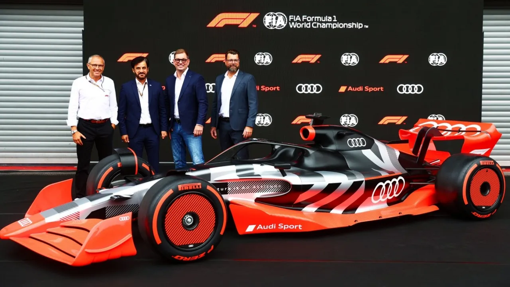
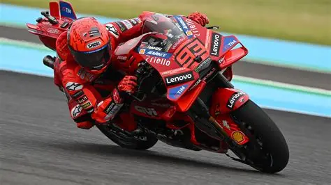
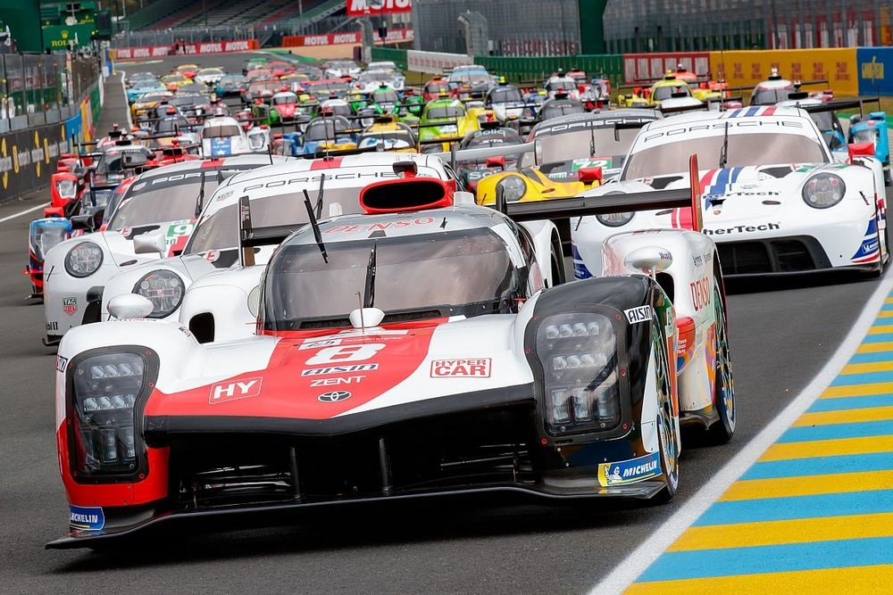

Alonso y el proyecto de Audi 2027
Mientras el asturiano exprime su monoplaza, se confirma que Carlos Sainz Jr. ficha por Audi para la F1 de 2027.

Mientras el asturiano exprime su monoplaza, se confirma que Carlos Sainz Jr. ficha por Audi para la F1 de 2027.

El piloto neerlandés de Red Bull sentencia matemáticamente el Mundial con una exhibición en Singapur.

El piloto de Cervera completa con éxito sus primeros tests de pretemporada en Mugello marcando los mejores tiempos.

La clásica e mítica carrera de resistencia promete un duelo histórico este año en la categoría reina hypercar.